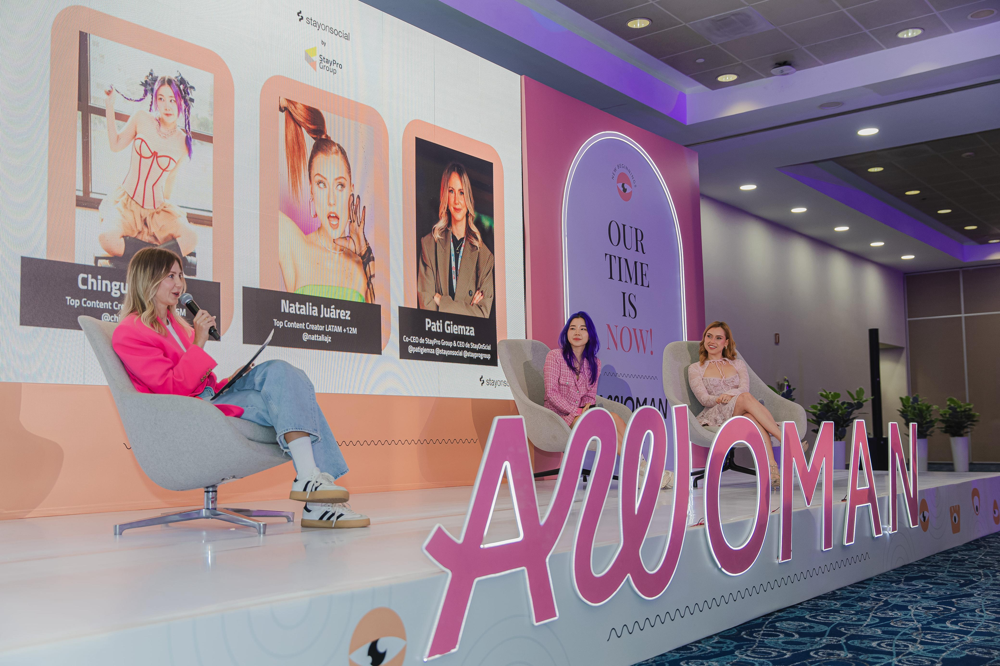

El primer fin de semana de marzo, los días 1 y 2, AWOMAN celebró su esperada edición 2025 en el Centro Citibanamex de la Ciudad de México. Este evento, único en su tipo, reunió a más de 2,000 mujeres en un espacio pensado para inspirar, conectar y empoderar. Fue mucho más que una cita; fue una experiencia transformadora creada por y para mujeres, consolidando a AWOMAN como una de las plataformas más influyentes en el ámbito del crecimiento personal y profesional femenino. AWOMAN 2025 no se limita a ser un evento, es un movimiento que, tras 13 ediciones, ha logrado reunir lo mejor del desarrollo personal y profesional en un solo lugar. Un lugar donde cada mujer puede encontrar su voz, celebrar sus logros y, sobre todo, trazar nuevas rutas hacia el éxito. Este año, la propuesta fue aún más emocionante, con más de 60 conferencias, talleres y experiencias diseñadas para ofrecer algo más que aprendizaje, sino también momentos de reflexión, conexión y empoderamiento.
AWOMAN 2025 no se limita a ser un evento, es un movimiento que, tras 13 ediciones, ha logrado reunir lo mejor del desarrollo personal y profesional en un solo lugar. Un lugar donde cada mujer puede encontrar su voz, celebrar sus logros y, sobre todo, trazar nuevas rutas hacia el éxito. Este año, la propuesta fue aún más emocionante, con más de 60 conferencias, talleres y experiencias diseñadas para ofrecer algo más que aprendizaje, sino también momentos de reflexión, conexión y empoderamiento.
El evento no solo brindó herramientas valiosas para el crecimiento profesional, sino también un espacio donde cada asistente tuvo la oportunidad de compartir historias de vida que, más allá de inspirar, alentaron a seguir adelante, superar obstáculos y visualizar nuevas metas. Fue un recordatorio de que, al unirnos, podemos alcanzar nuevas alturas y transformar nuestras vidas y las de quienes nos rodean. AWOMAN 2025 dejó una huella profunda en todos los presentes, reafirmando su papel como un referente para la evolución y el empoderamiento femenino.
Lo que sucedió en AWOMAN 2025
- Conferencias y Talleres: Desde el emprendimiento hasta el bienestar integral, más de 40 expertas compartieron sus conocimientos en una serie de ponencias que abarcaron desde el empoderamiento personal, temas en finanzas, pasando por el desarrollo emocional y la salud sexual. Cada espacio ofreció herramientas concretas para seguir creciendo, tanto a nivel profesional como personal.
- AWOMAN Bazaar: Un paraíso para las amantes del diseño, la moda y el emprendimiento, donde marcas creadas por mujeres brillaron con sus propuestas innovadoras. Joyas, accesorios, ropa, y decoraciones para el hogar fueron solo algunos de los artículos que las asistentes pudieron descubrir.
- Espacios para Conectar: Un ambiente cuidadosamente diseñado para propiciar el networking, el diálogo abierto y la creación de comunidades. AWOMAN se ha establecido como un lugar donde las mujeres pueden compartir y aprender, creando lazos que trascienden más allá de un evento.
- A Tasty Spot: Un rincón delicioso donde se disfrutó de alitas, snacks dulces, bebidas, postres y más.
Los patrocinadores de AWOMAN 2025 jugaron un papel fundamental en crear experiencias únicas que hicieron que cada asistente se sintiera parte de algo extraordinario. Con marcas como: Advantax,Bubba Essentials, Kleenex Cottonelle, Canva, Dr Akerman's, Farmacias Del Ahorro, FotoSun 100, Liverpool, Oro Gold, Plena Flem, Piligrim's, Ponto, Seima, Sephora, Splenda, The Skin Clinic, Tampax, Volkswagen, Yoplait, Licor 43. El evento brilló con un sinfín de activaciones exclusivas que ofrecieron una experiencia completa, desde probar nuevos productos hasta recibir obsequios y participar en actividades.
AWOMAN 2025 no fue solo un fin de semana más. Fue un verdadero testimonio del poder transformador que las mujeres pueden generar cuando se unen, se apoyan mutuamente y se comprometen a crecer sin barreras. AWOMAN 2025 no solo celebró el presente, sino que dejó claro que el futuro del empoderamiento femenino está lleno de infinitas oportunidades, autenticidad y una fuerza inquebrantable.
Cada charla, cada conexión, cada momento vivido durante este evento fue una muestra de lo que se puede alcanzar cuando se trabaja juntas hacia un mismo propósito. Para aquellos que no pudieron ser parte de esta experiencia única, el espíritu de AWOMAN continúa vivo en cada mujer que participó, y el impacto sigue resonando. La cuenta regresiva para la próxima edición ya ha comenzado, y promete ser aún más grande, más inspiradora y, sin duda, más transformadora.